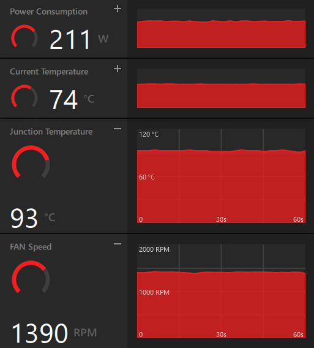
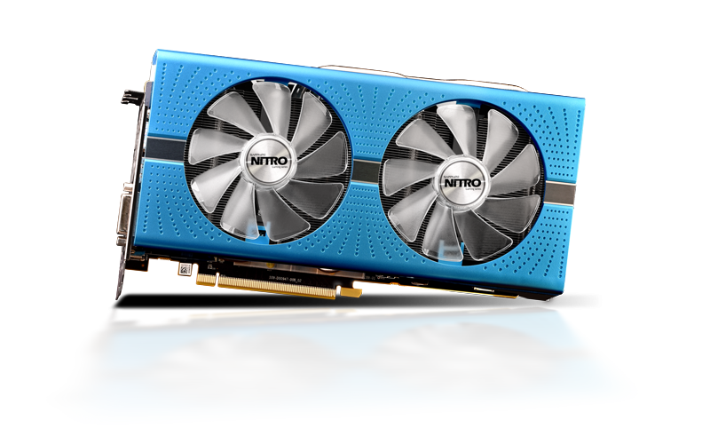

Overclocking se baseia em aumentar a frequência de operação de um componente além dos valores de fábrica. Geralmente, isso não requer nenhum tipo de alteração física no hardware por parte do usuário e é feito inteiramente a partir de software. Existem inúmeras ferramentas capazes de fazer overclock em placas de vídeo, como o MSI Afterburner e o AMD Wattman. O objetivo do overclock é aumentar a performance de um dispositivo, porém isso geralmente vem com a consequência de gerar quantidades desproporcionalmente altas de calor.
É importante lembrar que fazer overclock tem certos riscos, porém no caso de placas de vídeo, existem limites que impedem que o usuário cause dano ao hardware. Geralmente, é bom seguir a regra de não tocar na voltagem e não aumentar o limite de energia além do necessário.
O processo se resume a tentar aplicar uma frequência gradativamente maior que a padrão até chegar no limite que a placa suporta antes de causar erros, que vão desde artefatos (falhas visuais) a desligamentos do sistema. O que determina o a frequência máxima que pode ser alcançada no núcleo e na memória é a qualidade dos chips. A chamada "loteria do silício" se refere a chance aleatória de receber uma placa com potencial alto ou baixo de overclock. Placas com alto potencial possuem requisitos de voltagem relativamente baixos para segurar determinada frequência, enquanto placas com potencial mais baixo precisam de mais voltagem para fazer o mesmo.
Undervolting é um processo bem mais atraente para a maioria dos usuários, pois ele permite manter ou até mesmo melhorar a performance de um dispositivo enquanto o mesmo utiliza menos energia e gera menos calor. A ideia é basicamente manter as frequências de operação padrões do dispositivo, mas reduzir a voltagem. Com isso, é possível diminuir significativamente o consumo de energia de uma placa de vídeo, logo esquentando menos e impedindo-a de atingir o seu limite de energia e permitindo-a ficar mais tempo com frequências mais altas. Obviamente undervolting também depende da qualidade do chip; os de melhor qualidade conseguirão diminuir mais a voltagem.